Cats by Post
Seven rooms before and after the web integration in PR #53.
web-ed1ccc22b4e9Commit 24a086d2d0036ba3c8d1dfa408f6c7166fa88cb9web-2a72996faf2cCommit d5a5f5f63953b48c138160183d154371d13a41a0Sorting Office
Campaign · Delivery 1-4 · The Sorting Office retains its existing paper presentation.
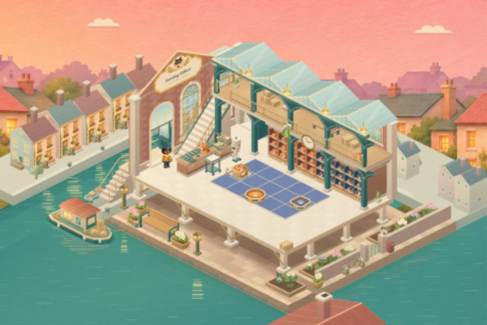
web-ed1ccc22b4e9sorting-office-paper-de889dad5105

web-2a72996faf2csorting-office-paper-de889dad5105
Town Depot
Campaign · Delivery 4-15 · The integrated Depot adds the accepted courier, working slide and dimensional flaps.
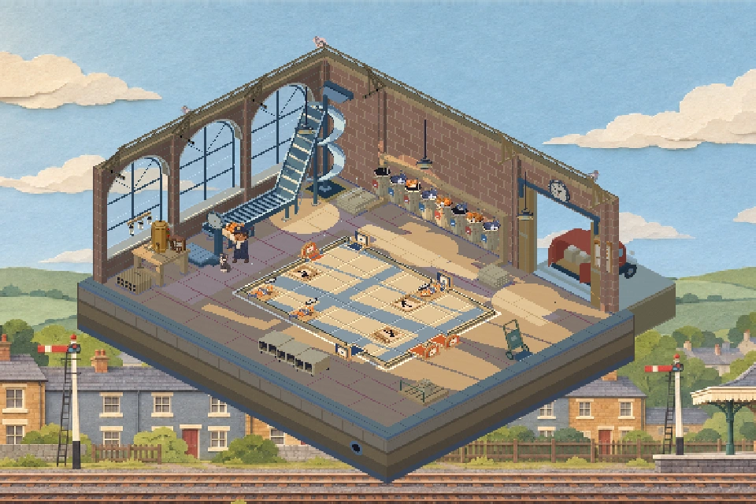
web-ed1ccc22b4e9depot-contact-3f9fc92684
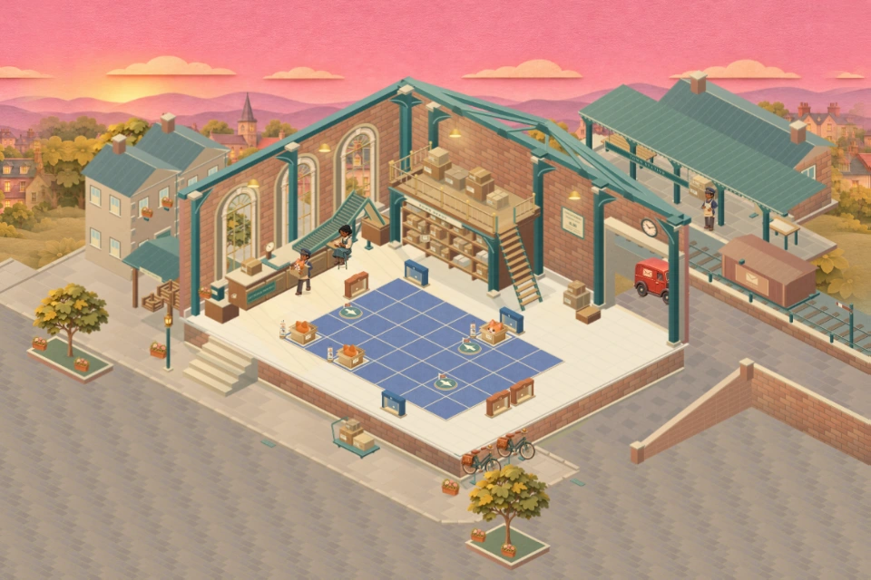
web-2a72996faf2cdepot-paper-9ff87b4e29b0
Town Depot in motion
Delivery 4-15 runs the same certified arrangement on both sides. The paired clip steps both engines together so you can follow the courier and the flaps.
web-ed1ccc22b4e9
After · web-2a72996faf2c
Valley Mail
Campaign · Delivery 5-11 · Valley Mail now uses the accepted carriage renderer with the board projected into the carriage floor.
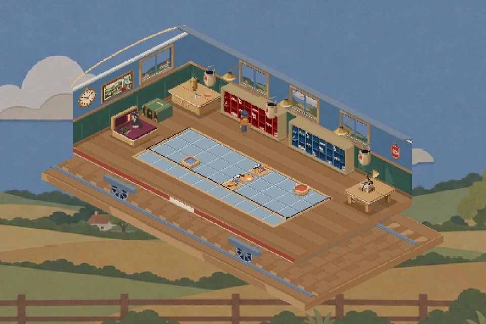
web-ed1ccc22b4e9train-craft-f20d6f0108
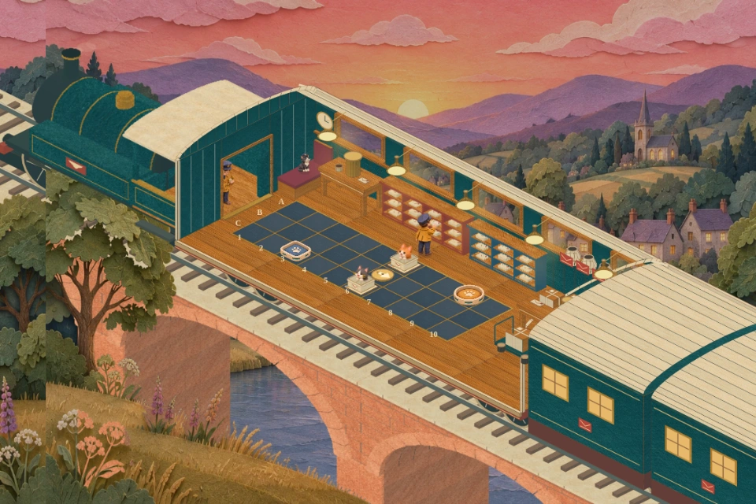
web-2a72996faf2cmailtrain-paper-6951f0d59094
Civic Mail Hall
Campaign · Delivery 6-15 · Civic Mail Hall retains its existing structural presentation.

web-ed1ccc22b4e9cityhall-fidelity-527093ea02
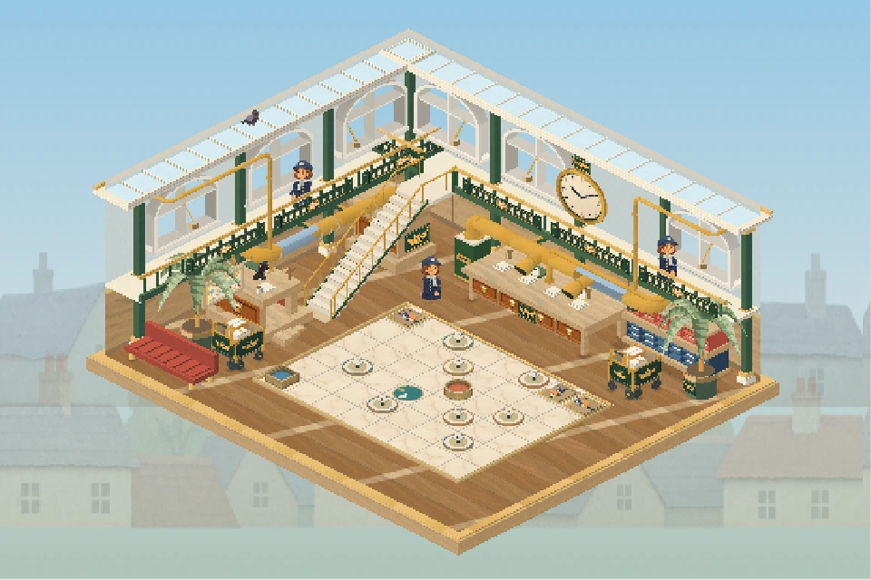
web-2a72996faf2ccityhall-fidelity-527093ea02
Parcel Room
Campaign · Delivery 7-15 · The Parcel Room retains its existing atmosphere and puzzle floor.

web-ed1ccc22b4e9parcel-fidelity-32d74bd062
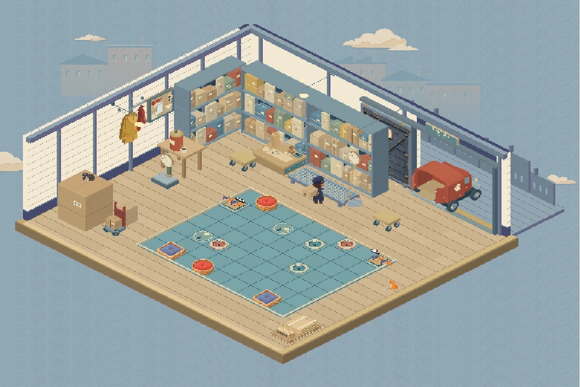
web-2a72996faf2cparcel-fidelity-32d74bd062
Christmas Night Mail
Campaign · Delivery 8-15 · The after build puts the accepted winter station and workers around the canonical puzzle board.
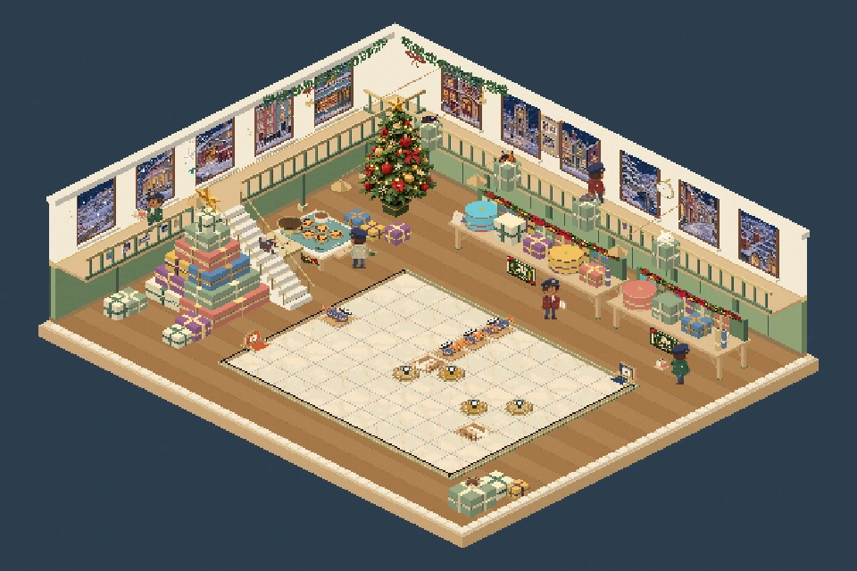
web-ed1ccc22b4e9christmas-polish-6fe82d9bab
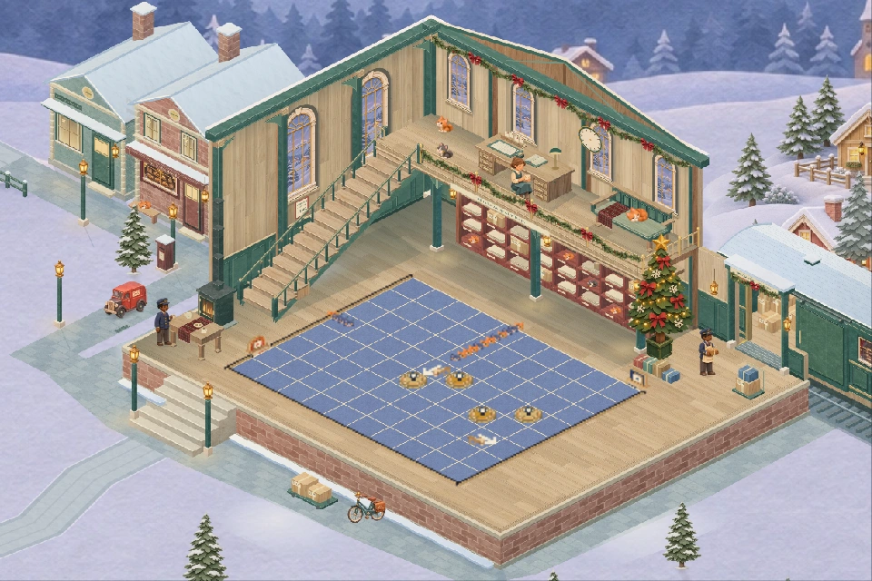
web-2a72996faf2cchristmas-station-93f290780861
Lantern Loft
Daily · 2026-11-06 · The before build draws the Daily in the canonical Box Room. The after build uses the Lantern Loft paper renderer.
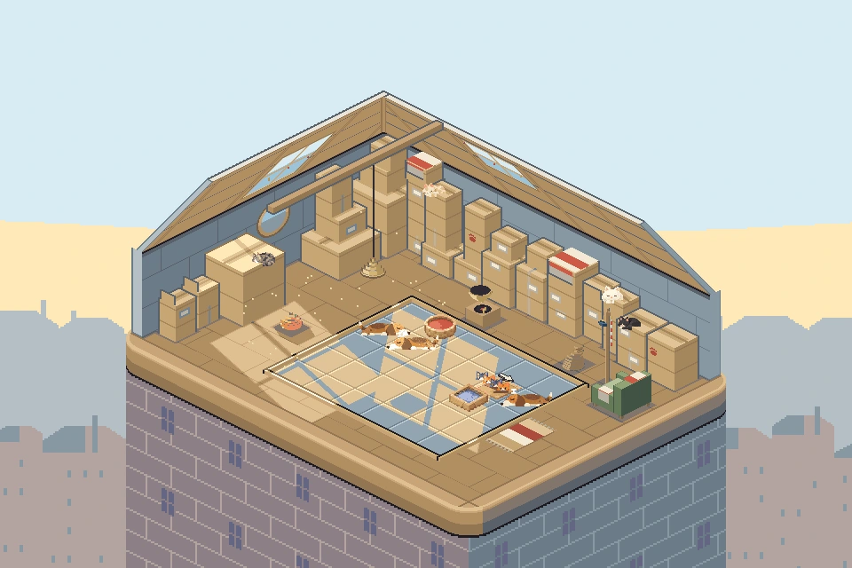
web-ed1ccc22b4e9Canonical Box Room
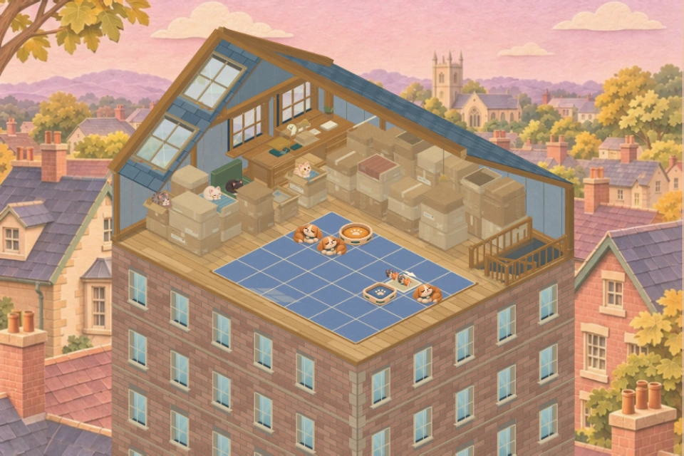
web-2a72996faf2cboxroom-paper-ce2d616a5110